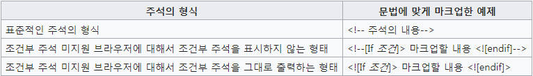
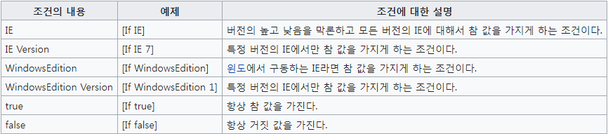
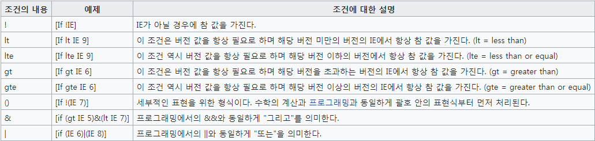
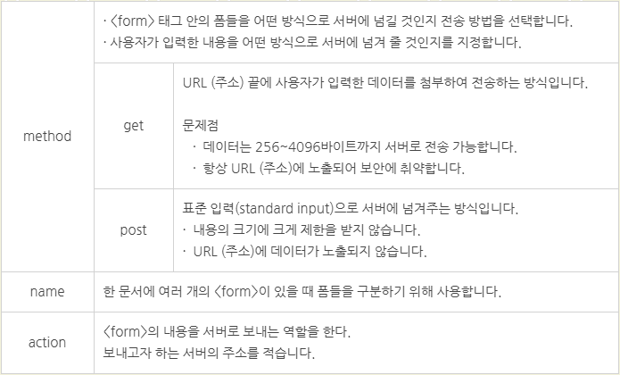
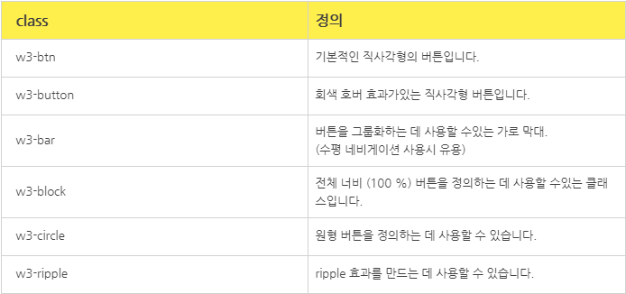

HTML
HTML(HyperTexy Markup Language)은 웹 문서를 표현하기 위한 하이퍼텍스트 마크업 언어입니다.
하이퍼텍스트란 문서에서 다른 문서로 이동하는 것을 말하며, 마크업이란 태그를 사용하여 콘텐츠의 의미를 부여하는 것을 말합니다.
태그(tag)
태그는 HTML에서 정보를 전달하는 방식을 의미합니다.
- 태그는 열린태그와 닫는태그가 있습니다.
- 닫힌 태그에는 "/"있어야 합니다.
- 닫는 태그가 필요 없는 것도 있습니다.
- HTML5 에서는 "/"가 생략이 가능합니다.
속성(Attrubute)
속성은 요소에 정보를 추가하거나 다양한 기능을 설정합니다.
속성은 여러가지 태그에 공통적으로 사용할 수 있는 속성도 있으며, 특정한 태그에만 사용하는 속성도 있습니다.
요소(Element)
요소는 HTML을 구성하는 가장 기본 단위입니다.
태그의 시작태그와 끝나는 태그 사이의 범위를 요소라고 합니다.
주석
주석 표시는 프로그램에 영향을 미치지 않으며, 설명이나 메모를 목적으로 사용합니다.
블록 요소와 인라인 요소
블록요소는 박스, 인라인 요소 텍스트를 의미합니다.
- 블록 엘리먼트(Block Element)
- 독립된 박스 영역으로 한 줄에 하나에 블록 요소만 표현할 수 있습니다.
- 블록 요소에서 블록 요소와 인라인 요소를 포함 할 수 있습니다.
- 블록 요소에 포함된 태그 : <div> <p> <ul> <li> <address>
- 인라인 엘리먼트(Inline Element)
- 독립된 텍스트 영억으로 한 줄에 여러 개의 인라인 요소를 표현할 수 있습니다.
- 인라인 요소에서 블록요소가 포함 될 수 없지만, 인라인 요소는 포함 할 수 있습니다.
- 인라인 요소에 포함된 태그 : <span> <img> <a> <input> <button> <br>
DTD(Document Type Declaration
웹 문서를 제작하기 위해서는 웹 문서 유형을 설정해야 합니다.
독타입을 설정하지 않거나 잘못 설정하면 브라우저에 따라 화면이 다르게 나오거나 랜더링이 달라지기 때문에 독타입을 설정해야 합니다.
<!-- HTML 4.01 Strict -->
<!DOCTYPE HTML PUBLIC "-//W3C//DTD HTML 4.01//EN" "http://www.w3.org/TR/html4/strict.dtd">
<!-- HTML 4.01 Transitional -->
<!DOCTYPE HTML PUBLIC "-//W3C//DTD HTML 4.01 Transitional//EN" "http://www.w3.org/TR/html4/loose.dtd">
<!-- HTML 4.01 Frameset -->
<!DOCTYPE HTML PUBLIC "-//W3C//DTD HTML 4.01 Frameset//EN" "http://www.w3.org/TR/html4/frameset.dtd">
<!-- XHTML 1.0 Strict -->
<!DOCTYPE html PUBLIC "-//W3C//DTD XHTML 1.0 Strict//EN" "http://www.w3.org/TR/xhtml1/DTD/xhtml1-strict.dtd">
<!-- XHTML 1.0 Transitional -->
<!DOCTYPE html PUBLIC "-//W3C//DTD XHTML 1.0 Transitional//EN" "http://www.w3.org/TR/xhtml1/DTD/xhtml1-transitional.dtd">
<!-- XHTML 1.0 Frameset -->
<!DOCTYPE html PUBLIC "-//W3C//DTD XHTML 1.0 Frameset//EN" "http://www.w3.org/TR/xhtml1/DTD/xhtml1-frameset.dtd">
<!-- XHTML 1.1 -->
<!DOCTYPE html PUBLIC "-//W3C//DTD XHTML 1.1//EN" "http://www.w3.org/TR/xhtml11/DTD/xhtml11.dtd">
<!-- html5 -->
<!DOCTYPE html>
언어 속성 설정
콘텐츠의 언어를 인식하고 언어 정보를 추출하는데 사용합니다.
미리 언어를 설정하면 효율성이 더 좋아집니다.
<!--HTNL5-->
<html lang="ko">
<!--HTNL4-->
<html xmlns="http://www.w3.org/1999/xhtml" xml:lang="ko">
문서 구조
HTML의 구조는 html요소 안에 head와 body로 이루어져 있습니다.
- HTML 구조는 독타입 선언을 해주어야 하나의 웹 문서가 완성됩니다.
- HTML 문서는 상하 관계가 존재하는 계층적인 구조로 되어 있습니다. 상위에 있는 요소와 하위에 있는 요소는 부모 자식 관계로 표현하며, 이러한 구조를 DOM구조라고 합니다.
- head 요소에는 제목, 사이트 정보, 스크립트, 스타일 시트, 메타 정보 등을 제공합니다.
- body 요소에는 문서 본문에 해당하는 콘텐츠 영역입니다.
<!DOCTYPE html>
<html lang="ko">
<head>
</head>
<body>
</body>
</html>
웹 접근성
웹 표준은 월드 와이드 웹의 측면을 서술하고 정의하는 공식 표준이나 다른 기술 규격을 가리키는 일반적인 용어이다. 최근에 이 용어는 웹 사이트를 작성하는 데 중요도가 높아지고 있으며 웹 디자인, 개발과 관계가 있다.수많은 상호 의존성이 있는 표준들과 규격들 가운데 일부는 단지 월드 와이드 웹으로만 끝나는 것이 아니라, 인터넷의 관리 측면이기도 하며 이러한 표준들은 직간접적으로 웹 사이트, 웹 서비스 개발과 관리에 영향을 주고 있다. 이러한 것들 모두 "웹 표준"이라고 부르지만 웹 표준으로 이동하는 것을 찬성하는 사람들은 사용성과 접근성에 직접 영향을 미치는 더 높은 수준의 표준에 초점을 두는 경향이 있다. 더 넓은 뜻의 웹 표준은 다음을 이룬다
웹 표준
웹사이트에서 제공하는 정보를 차별 및 제한없이 동등하게 이용할 수 있도록 보장합니다.
웹 표준은 월드 와이드 웹의 측면을 서술하고 정의하는 공식 표준이나 다른 기술 규격을 가리키는 일반적인 용어입니다. 최근에 이 용어는 웹 사이트를 작성하는 데 중요도가 높아지고 있으며 웹 디자인, 개발과 관계가 있습니다. 수많은 상호 의존성이 있는 표준들과 규격들 가운데 일부는 단지 월드 와이드 웹으로만 끝나는 것이 아니라, 인터넷의 관리 측면이기도 하며 이러한 표준들은 직간접적으로 웹 사이트, 웹 서비스 개발과 관리에 영향을 주고 있습니다. 이러한 것들 모두 "웹 표준"이라고 부르지만 웹 표준으로 이동하는 것을 찬성하는 사람들은 사용성과 접근성에 직접 영향을 미치는 더 높은 수준의 표준에 초점을 두는 경향이 있습니다.
- 정보와 사용자 인터페이스 요소는 그들이 인지할 수 있도록 사용자에게 표시될 수 있어야 한다.
- 사용자 인터페이스 요소와 탐색은 운용 가능해야 한다.
- 정보와 사용자 인터페이스 운용은 이해할 수 있어야 한다.
- 콘텐츠는 보조 기술을 포함한 넓고 다양한 사용자 에이전트에 의존하여 해석될 수 있도록 충분히 내구성을 가져야 한다.
HTML5shiv
HTML5shi기능은 새로운 요소를 지원해주지 못하는 브라우저나 구 버전의 익스플로러가 HTML5 요소를 지원해주는 기능입니다.
header, section, article, footer, nav, aside, figure, figcaption, main, content 등의 요소를구 버전의 익스플로러(ie6~8)은 inline요소(한 줄로 나열)로인식하기 때문에 레이아웃 작업에 문제가 됩니다.
조건부 주석
HTML을 이용해 웹 사이트를 마크업할 때에 크로스 브라우징을 할 경우에 HTML의 주석 태그를 이용하여서 인터넷 익스플로러에 대해 적용하기 위한 특수한 형식의 주석이다.
  TAG
<div>
div 태그는 문서의 섹션을 만들거나 영역을 만들 때 사용합니다.
<p>
p태그는 문단을 쓸때 사용한다.
<ul>
ul 테그는 순서가 없는 목록을 정의합니다.
<ul>
li 태그는 목록의 항목을 정의합니다.
- li태그는 ul태그 ol태그 menu태그와 같이 사용합니다.
- 태그 안에는 다른 목록을 중첩으로 사용할 수 있습니다.
<a>
태그는 하이퍼 링크를 정의합니다.
- 하이퍼 링크란 현재 페이지에서 다른 페이지로 이동을 말합니다
- 방문하지 않은 링크는 밑줄과 파란색으로 표시됩니다.
- 방문한 링크는 밑줄과 보라색으로 표시됩니다.
- 활성화된 링크는 밑줄과 빨간색으로 표시됩니다.
- HTML5에서는 a태그는 블록 요소를 포함할 수 있습니다.
<img>
img태그는 이미지를 정의합니다.
- img태그는 src 속성과 alt 속성은 필수적으로 설정합니다.
- img태그는 인라인 구조이며, border. border-radius, padding, margin, with, height 속성 값을 설정할 수 있습니다.
<pre>
pre태그는 구문태그로서 컴퓨터 코드를 정의합니다. block의 속성을 지니고있습니다.
<code>
code태그는 컴퓨터 소스를 표현할때 쓰는 태그입니다.텍스트 중간에 사용되는 코드를 사용할 때 쓸 수 있습니다. inline의 속성을 지니고 있습니다.
<br>
br태그는 바꿈을 하려면 직접 줄 바꿈을 한다는 명령을 적어 주어야 하며, HTML에서는 <br>를 통하여 줄바꿈을 합니다. 종료테그를 따로 사용하지 않습니다.
<hr>
hr 태그는 제목가 본문을 나누거나 글자와 그림의 경계를 구분하는 입체적인 수평선 태그로 활용한다
<mata>
hr 태그는 웹 문서에 대한 여러가지 정보를 제공합니다.
| 메타 데이터 | 설명 |
|---|---|
| charset | 웹 페이지 언어 설정 |
| author | 웹 페이지 만든사람 |
| description | 웹 페이지에 대한 설명 |
| keywords | 웹 페이지에 대한 키워드 |
| apllication name | 웹 페이지에 관련된 웹 응용프로그램 이름 |
| gemerator | 웹 페이지에 만든 소프트웨어의 이름 |
<!--HTML5 언어 설정 -->
<meta charset="UTF-8">
<!--HTML4 언어 설정 -->
<meta http-equiv="Content-Type" content="text/html;charset=UTF-8">
<!--웹 문서에 대한 제작자 설정-->
<meta name="author" content ="loga">
<!--웹 문서에 대한 설명-->
<meta name="description" content = "이 사이트는 무슨무슨 사이트입니다.">
<!--웹 문서에 대한 키워드 설정-->
<meta name="keyword" content = "키워드, 키워드, 키워드">
<!--웹 문서에 대한 웹 으용 프로그램 이름-->
<meta name="application-name" content = "응용 프로그램 이름">
<!--웹 문서에 대한 소프트웨어 이름-->
<meta name="generator" content = "소프트웨어 이름">
<table>
table태그는 표를 만들기위해 사용됩니다. table태그는 아래 태그와 함께 사용합니다.
- <tr> 행(row)은 가로를 나타냅니다. 행을 만드는 태그입니다.
- <td> 열,세로를 나타냅니다. 열을 만드는 태그입니다
- <th> 태그는 테이블의 헤더부분을 나타내며 중앙에 정렬하고 굵게 표시합니다.
- <thead> 표의 머리글,제목으로 사용되며 단, 하나만이 존재합니다.
- <tbody> 표의 본문부분으로 사용되며 여러개가 존재합니다
- <tfoot> 표의 바닥글입니다. 본문 통합, 통계 값등으로 표시되며 단, 하나만 존재합니다.
- colspan 열끼리 병합할 때 사용되는속성입니다. 태그뒷쪽에는 셀의 개수를적어 합칠 셀을표시해줍니다.
- rowspan 행끼리 병합할 때 사용되는 속성입니다. 태그뒷쪽에는 셀의 개수를적어 합칠 셀을표시해줍니다.
<strong>
strong는 웹문서 상에 표시되는 글자를 강조하여 표현해주는 태그입니다.
글자가 굵게 나와 글에 중요한 부분을 강조하는 역할을 합니다.
<em>
em는 웹문서 상에 표시되는 글자를 강조하여 표현해주는 태그입니다.
글자가 길게 나오며 기울여서 표현하는 역할을 합니다.
<h1 ~ h6>
h는 heading의 약자입니다. 제목을 표현할 때 쓰는 태그입니다. h1이 가장큰 글 씨를 나타내며 내림순으로 글씨는 작아집니다.
<colgroup>
colgroup 표의 가로 사이즈 조정을 위해 사용되는 태그입니다. %로 비율을 설정할 수 있습니다.
- 표의 열을 구조적인 그룹화를 위한 요소입니다
- caption요소 바로 뒤에 thead요소와 tfoot요소, tbody요소 이전에 기술합니다.
- col요소를 포함할 수 있습니다.
<span>
span 태그는 다른 텍스트와 구별하기 위해 사용됩니다 또 inline형식으로 공간을 분할 합니다.
- SPAN 태그는 시작태그인 <SPAN 속성="요소">와 마감태그인</SPAN>으로 구성되어 있습니다.
- 태그내에 속성을 적지 않아도 시작태그와 마감태그 사이에 들어가는 내용에 따라 그 공간의 크기도 저절로 달라집니다.그 공간은 내용에 국한되며, DIV와 달리 태그의 시작 전후 자동 줄바꿈 기능이 없어 연속으로 사용하면, 이웃하게 위치합니다.
- SPAN 태그는 연속사용시 이웃하는 성질을 가지고 있기에 글씨에 관한 style을 적용할 때 많이 사용되는 태그입니다.
<div>
div 태그는 그 자체만으로 특별한 효과는없으나 문단이나 문장의 형태를 규정합니다. block형식으로 공간을 분할합니다.
<form>
form요소를 사용하면 사용자의 입력을 받은 input 요소에도 다양한 스타일을 설정할 수 있다.
<fieldset>
form요소를 그룹으로 묶는 태그입니다.
<legend>
그룹으로 묶는 구역에 제목을 붙이는 태그입니다.
<label>
form요소에 캡션을 붙이기 위한 것으로, form요소와 캡션으로 사용하는 텍스트가 짝을 이루고 있으며 form요소의 위치가 바뀌더라도 캡션이 항상 따라다니게 되는 태그입니다.
<button>
간단하게 링크나 네이게이션을 사용하고자 할때 유용하게 사용할 수있습니다.
<input>
사용자가 내용을 입력하는 부분, 버튼부분 등 입력 항목을 만들때 사용합니다.
- hidden - 사용자에게는 보이지 않지만 서버로 남겨지는 값
- text - 한줄짜리 텍스트 입력할 수 있는 텍스트 상자
- search - 검색상자
- tel - 전화번호 입력 필드
- url - url주소 입력 할 수 있는 필드
- email - 메일 주소 입력 할 수 있는 필드
- password - 비밀번호 입력할 수 있는 필드(사용시 패스워드가 *****로 보임)
- datetime - 국제 표준시(utc)로 설정된 날짜와 시간
- datetime - local 사용자가 있는 지역을 기준으로 설정된 날짜와 시간
- date - 사용자 지역 기준 날짜(년,월,일)
- month - 사용자 지역 기준 날짜(년,월,일)
- week - 사용자 지역 기준 날짜(년,주)
- tine - 사용자 지역 기준 시간
- mumber - 숫자를 조정할 수 있는 화살표
- range - 숫자를 조절할 수 있는 슬라이드 막대 넣기
- color - 색상표
- checkbox - 주어진 항목에서 2개 이상 선택 가능한 체크박스
- radio - 주어진 항목에서 1개만 선택 가능한 라디오 버튼
- file - 파일 첨부
- submit - 서버 전송 버튼
- image - submit 버튼 대신 사용할 이미지 넣기
- reset - 리셋버튼
- button - 버튼
- readonly - 텍스트 필드나 텍스트 영역처럼 필드 안에 내용이 있으면서 사용자에게 내용을 보여주기만 하고, 사용자가 입력은 할 수 없게 하는 속성입니다.
- paceholder - input 요소의 필드 안에 적당한 힌트 내용을 표시하고 있다가 그 필드를 클릭하면 내용이 사라지도록 하는 것입니다.
- autofocue - 페이지를 불러오자마자 폼의 요소 중에서 원하는 요소에 마우스 커서가 표시되도록 하는 것입니다.
- autocomplete - 웹 브라우저의 자동완성 기능은 사용자가 입력했던 내용을 기억했다가 비슷한 내용을 입력할 경우 이전에 입력했던 내용을 힌트로 보여줍니다.
- required - submit을 클릭하면 서버로 form을 전송하는대 이때 필수 필드에 필요한 내용이 모두 채워졌는지 검사해야합니다. 이때 required속성을 지정하면 필수필드가 됩니다.
<section>
일반적으로 문서의 콘텐츠 영역을 의미합니다.
- 콘텐츠와 관련된 한 가지 주제 영역을 의미합니다.
- section 요소는 문장이나 스타일링 요소이기 때문에 편의나 영역을 위함이면 div 태그가 좋습니다.
- section 요소는 제목이 없는 경우 섹션이라고 할 수 없기 떄문에 제목을 제공해야 합니다.
- secyion 요소는 일반적인 주제가 아니라면 구체적인 요소 (article, aside, nav)를 대신 사용하는 것이 더 절절합니다.
<nav>
웹 페이지 내에서 이동 할 수 있는 네비게이션 링크 그룹입니다.
- nav는 문서의 핵심적인 페이지의 메뉴 및 서브 메뉴에서 사용합니다.
- nav는 문서에서 주로 한 번만 사용합니다.
- 문서 안에 링크가 포함된 콘텐츠는 nav를 사용하지 않습니다.
- nav는 핵심정인 네비게이션에 사용해야 하므로 footer내에 링크 그룹의 사용은 적절하지 않습니다.
<main>
웹 문서의 주요 콘텐츠 영역을 나타낼 때 사용합니다.
- main 태그는 웹 페이지에서 한번만 사용할 수 있으며, 접근성과 검색 영역 노출을 향상시킵니다.
- article, aside, footrt, header, nav의 하위 요소로 사용할 수 없습니다.
<aside>
웹 문서의 메인 콘텐츠와 관련된 사이드 콘텐츠 영역을 나타냅니다.
- aside는 메인 콘텐츠와 관련된 사이드의 정보, 광고 등 부분적인 정보를 그룹화할 때 사용합니다.
<header>
웹 문서의 해더 영역을 나타냅니다.
- header 태그는 웹 페이지에 대한 소개, 네이게이션 영역, 테이블 영역, 검색 영역, 로고 영역을 포함하는 영역입니다.
- header 태그에는 제목 태그가 포함될 수 있으며, 필수 조건은 아닙니다.
- header는 섹션 콘텐츠가 아닌 그룹화하기 위한 요소이므로 section요소를 포함 할 수 없습니다.
<footer>
웹 문서의 푸터 영역을 나타냅니다.
- footer 태그는 저작권 정보, 회사 정보, 관련 링크, 주소, 바닥글, 사이트 정보 등을 포함하는 콘텐츠 영역입니다.
- footer 는 섹션 콘텐츠가 아닌 그룹을 나타내는 요소이며, section, article, aside 등 포함할 수 있습니다.
<article>
웹 문서의 독립적인 항목을 나타내는 콘텐츠를 의미합니다.
- article는 포럼, 신문기사, 잡지, 블로그 항목, 게시판 글 등의 독립적인 항목을 나타냅니다.
- section은 하난의 주제를 나타낸다면, article은 주제를 묶은 독립적인 콘텐츠입니다.
- secuion 요소 안에는 article 요소를 쓸 수 있으며, article요소 안에도 section 요소를 쓸 수 있습니다.
<script>
html을 작성하다가 JavaScript를 사용해야 할 때 시작과 끝을 알려주는 태그입니다.
html에서 css를 사용하기 위해 style 태그를 사용했던 것과 같이 html에서 javascript를 사용하기 위한 방법중 하나로 사용되는 태그입니다.
<i>
<i>태그는 특별한 이유로 평범한 글자와 구분하기 위해 사용됩니다.
- <i>태그는 기술적인 구문이나, 언어, 사상, 생각 등에서 다른 텍스트와 구분하기 위해 사용합니다. <i> 태그는 다음 비교 태그에 적합한 의미가 없을 때 사용합니다.
- <i>태그는 기술적인 구문이나, 언어, 사상, 생각 등에서 다른 텍스트와 구분하기 위해 사용합니다.
- <i>
- HTML4에서 <i> 태그는 이탤릭체로 표현하기 위해 사용하였지만, HTML5에서 <i> 태그는 기술적인 구문, 언어, 사상, 생각 등에서 다른 텍스트와 구분하기 위해 사용합니다.
<figure>
설명글을 붙일 대상을 정의하는 태그이며, 무엇이든 그 대상이 될 수 있다.
<iframe>
iframe이란 A페이지에 B페이지를 가져와 보일 수 있게 하는 기능이다.
- 1. 제한된 공간안에 많은 자료를 넣어야 할 경우 : 주소 목록이 500개 정도 있는데 이걸 A페이지에 전부 넣어 보여주기에는 그 외에도 넣어야 할 자료가 많이 있다. 이럴 경우 외부 B문서를 만들어 그곳에 주소 목록을 작성한 후 A문서에는 작은 구역을 아이프레임으로 설정하여 그 정보들이 그 안에 보일 수 있도록 하는 것이다. 이럴경우 아이프레임에는 스크롤바가 생기게 된다.
- 2. 한 문서를 여러페이지에 동일하게 넣어야 할 경우 : 메뉴를 넣을 때 메뉴는 동일하게 여러 페이지에 넣는 경우가 많으므로 아이프레임을 사용하면 편리하다. 이렇게 하면 메뉴가 들어가 있는 파일만 수정하면 전체 페이지에 동일하게 그 결과가 출력되므로 수정사항이 생겼다고 해서 페이지 마다 수정할 필요가 없다. 프로그래머가 있을 경우 프로그램으로 할 수도 있는 기능이지만 디자이너 혼자서 홈페이지를 만들경우 이 기능을 사용하면 편리하다.
- 아이프레임에서 일반속성은 다 사용가능하며 style="속성:값;" 이렇게 사용하면된다. 또 한가지 중요한 것은 frameborder속성인데 이건 아이프레임 외곽의 입체 외곽선을 없앨 수 있는 옵션이다. 이 속성값을 0을 주면 프레임외곽선이 사라진다. 이건 style안이 아니라 밖에 쓴다.